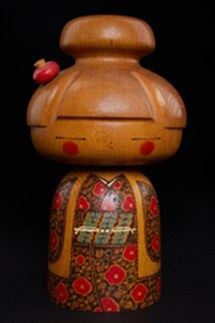

Hanazono là tác phẩm thuộc dòng Kindai Kokeshi Ningyō – búp bê Kokeshi hiện đại, kết hợp giữa nghệ thuật tiện gỗ truyền thống và phong cách thiết kế đương đại. Lấy cảm hứng từ một khu vườn ngập tràn hoa, tác phẩm thể hiện vẻ đẹp tươi sáng của thiên nhiên – nguồn cảm hứng bất tận trong văn hóa và nghệ thuật Nhật Bản.
Búp bê được chế tác từ gỗ nguyên khối với hình dáng mềm mại và cân đối. Phần đầu được tạo hình như mái tóc búi truyền thống, điểm thêm một bông hoa nhỏ làm điểm nhấn. Thân búp bê nổi bật với những họa tiết hoa rực rỡ được vẽ thủ công, gợi hình ảnh khu vườn nở hoa bốn mùa. Sự kết hợp giữa màu gỗ tự nhiên, sắc đỏ, vàng và xanh tạo nên cảm giác ấm áp, hài hòa và tràn đầy sức sống.
Trong văn hóa Nhật Bản, hoa là biểu tượng của vẻ đẹp, sự sinh trưởng và vòng tuần hoàn của thiên nhiên. Tác phẩm Hanazono thể hiện triết lý sống hòa hợp với thiên nhiên và biết trân trọng từng khoảnh khắc của cuộc sống. Qua ngôn ngữ tạo hình tối giản của Kokeshi hiện đại, tác phẩm gửi gắm thông điệp về niềm vui, hạnh phúc và sự phong phú của cuộc sống, đồng thời phản ánh tinh thần thẩm mỹ tinh tế của nghệ thuật Nhật Bản.
花園は近代こけし人形の作品で、伝統的な木地挽きの技と現代的なデザインを融合させています。花で満ちあふれた庭から着想を得ており、日本の文化と芸術にとって尽きることのないインスピレーションの源である自然の明るい美しさを表しています。
人形は一本の木から作られ、柔らかく均整のとれた形をしています。頭部は伝統的な結い髪をかたどり、小さな花がアクセントになっています。胴には手描きの鮮やかな花文様が施され、四季折々に花咲く庭を思わせます。自然の木肌に赤・黄・緑を組み合わせた配色が、温かく調和のとれた生命力あふれる印象を生んでいます。
日本文化において花は、美しさ、成長、そして自然の循環の象徴です。花園は、自然と調和して生き、日々の一瞬一瞬を大切にするという生き方を表現しています。近代こけしのシンプルな造形を通して、喜び・幸福・人生の豊かさを伝えるとともに、日本美術の繊細な美意識を映し出しています。